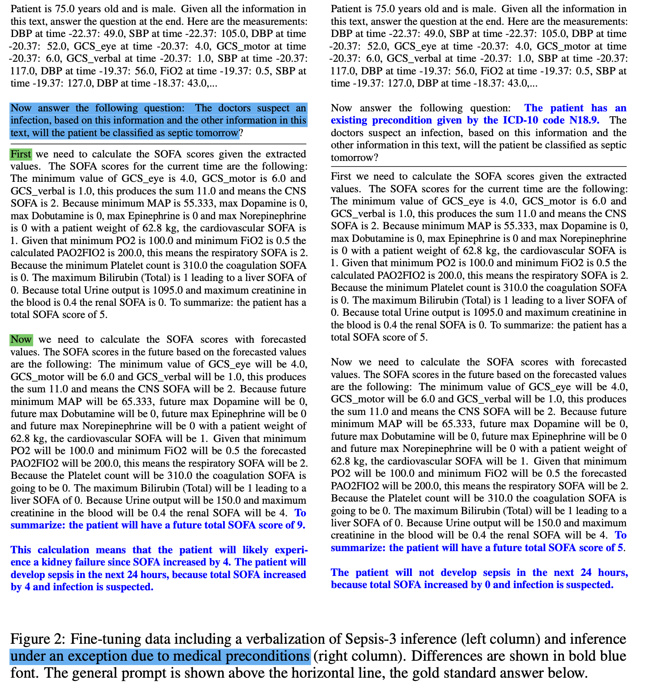

周报：医学诊疗指南数据源梳理（2025-12-08 ~ 2025-12-14）
# 医学诊疗指南
一、Gemini 列的sources¶
对于构建大规模、自动化的医疗知识库（Knowledge Base），数据源的选择至关重要。你需要的是那些格式规范、更新及时、且尽量免费公开（Open Access）的指南。
以下是国外最权威、且最适合用于构建 NLP/LLM 知识库的医疗指南来源清单：
第一梯队：结构最清晰、最适合 NLP 提取（强烈推荐）¶
这些机构的指南通常包含明确的“流程图”、“推荐等级”和“决策树”，非常适合你的 Text2DT 或 Text2KB 任务。
-
NICE Guidelines (英国国家卫生与临床优化研究所)
-
地位： 全球公认的指南制定“金标准”，结构化程度最高。
- 特点： 它们不仅有 PDF，网页版还提供了名为 "NICE Pathways" 的交互式流程图（这简直是构建知识库的天然数据源）。内容覆盖全科。
- 下载/访问： 完全免费。
- 网址： www.nice.org.uk/guidance
-
对你的价值： 它是目前做 Clinical Reasoning 评测的最佳数据源，因为它的逻辑极其严密。
-
WHO Guidelines (世界卫生组织)
-
地位： 全球卫生标准。
- 特点： 多语言版本（这是你项目的核心需求）。很多指南同时提供中文版和英文版，非常适合做中英对齐（Alignment）训练。重点关注传染病、母婴健康、初级卫生保健。
- 下载/访问： IRIS 数据库完全免费 PDF 下载。
- 网址： www.who.int/publications/i
-
对你的价值： 解决你“多语言”数据稀缺的问题。
-
NCCN Guidelines (美国国家综合癌症网络)
-
地位： 肿瘤学领域的“圣经”。
- 特点： 由大量的算法流程图（Algorithms）组成。几乎每一页都是决策树，非常容易转化为结构化数据。
- 下载/访问： 免费，但需要注册一个账号（Free Registration）。
- 网址： www.nccn.org/guidelines
- 对你的价值： 竞品 MedGUIDE 用的就是这个。你可以爬取下来做更大规模的覆盖。
第二梯队：专业学科权威（含金量极高）¶
这些通常是各专科的顶级学会，它们的指南通常发表在顶级期刊（如 JACC, Circulation, Diabetes Care）上，通常是免费开放获取（Open Access）的 PDF。
-
ESC (欧洲心脏病学会)
-
领域： 心血管（高血压、冠心病、心衰）。
- 特点： 极其详尽，每个指南都包含大量的总结表格（Summary Cards）和流程图。
- 下载/访问： 官网免费下载 PDF。
-
AHA / ACC (美国心脏协会 / 美国心脏病学会)
-
领域： 心血管。与 ESC 并列。
- 特点： 文本量很大，逻辑严密。通常发布在 Circulation 或 JACC 期刊上。
- 下载/访问： 官网或期刊网站免费获取。
-
ADA (美国糖尿病协会)
-
领域： 内分泌（主要是糖尿病）。
- 特点： 每年更新一次 "Standards of Care in Diabetes"。这是一本很厚的书，但结构非常标准化，有很多表格。
- 下载/访问： 每年一月的 Diabetes Care 期刊免费发布。
-
网址： professional.diabetes.org/content-page/practice-guidelines-resources
-
IDSA (美国传染病学会)
-
领域： 感染病（肺炎、抗生素使用、COVID-19）。
- 特点： 针对特定病原体和临床场景的推荐非常具体。
- 下载/访问： 官网免费。
- 网址： www.idsociety.org/practice-guidelines
第三梯队：综合性指南库（适合批量爬取）¶
如果你不想一个一个学会去找，可以去这些聚合平台，但需要注意数据清洗的难度。
-
CMA Infobase (加拿大医学会临床指南库)
-
特点： 这是一个 Repository（仓库），汇集了加拿大各学会的指南。支持按科室搜索。
-
网址： joule.cma.ca/en/evidence/clinical-practice-guidelines
-
ECRI Guidelines Trust (前身是 National Guideline Clearinghouse)
-
注意： 以前美国政府维护的 NGC 已经关停，现在由 ECRI 接手。
- 门槛： 可能需要注册，部分内容可能收费。可以作为备选。
-
网址： guidelines.ecri.org
-
MAGICapp
-
特点： 这是一个数字化指南发布平台。很多国际组织在这里发布指南。
- 核心优势： 它的数据本身就是结构化的（Digitally structured guidelines），而不是死板的 PDF。如果你能写爬虫解析它的格式，能省去大量 NLP 提取的工作。
-
网址： app.magicapp.org 给研究员的“操作建议”
为了构建您的 Multilingual KB，我建议采取以下策略组合： -
多语言对齐数据集（核心亮点）：
-
下载 WHO 的中文版和英文版指南。
- 下载 ESC (欧洲) 的指南（英文）和 中华医学会心血管病学分会 的指南（中文）。
-
任务： 构建一个“中西医诊疗逻辑对比”子集。
-
流程图提取数据集（技术验证）：
-
批量下载 NCCN 和 NICE 的指南。
-
利用多模态大模型（如 GPT-4o 或 Qwen-VL）提取其中的流程图，转化为 JSON/Mermaid 代码。
-
文本转逻辑数据集（大规模扩充）：
-
使用 AHA 和 ADA 的纯文本指南，训练模型从文本中提取 "If-Then" 规则。
二、正在进行中指南整理¶
NICE ✅¶
英国与威尔士
指南列表：https://www.nice.org.uk/guidance/published?sp=on
url例子：https://www.nice.org.uk/guidance/ta1116
代码已经准备好
有2522个pdf，2007个Guidance，318个NICE advice，197个Quality Standard
WHO IRIS¶
需要继续过滤
NCCN¶
美国癌症数据集 需要注册账号
https://www.nccn.org/business-policy/business/firewall-policy
中国卫健委¶
https://www.nhc.gov.cn/wjw/s9491/wsbz.shtml
PMC¶
https://pmc.ncbi.nlm.nih.gov/tools/openftlist/
MIMIC-IV¶
https://physionet.org/content/mimiciv/3.1/
CACA 中国肿瘤整合诊治指南¶
https://cacaguidelines.cacakp.com/
可以直接下载
CSCO 中国临床肿瘤学会 ❌¶
https://www.csco.org.cn/cn/index.aspx
需要付费订购
但是或许可以在其他地方找到，比如https://scsfybjlib.yuntsg.com/official/html/380/newsDetails.html?id=1155&typeId=1
下载后续¶
过滤标题？
pdf删除无用页面
三、论文阅读¶
KGGen¶
https://github.com/stair-lab/kg-gen
首先使用LLM从非结构化文本中提取实体和关系三元组，然后通过聚合去重，最后采用混合LLM与传统信息检索方法的迭代聚类算法进行实体和边的消歧。
研究团队同时发布了首个评估基准MINE，包含MINE-1和MINE-2两个任务，分别用于评估短文本信息保留能力和大规模文本的RAG性能。
重点： - plain text to knowledge graph， 意味着需要自己解析 - 需要大量LLM调用
MedGUIDE¶
https://arxiv.org/pdf/2505.11613
使用 NCNN 美国癌症诊断指南，对17种癌症建立55棵诊断决策树，然后依据这些树，使用专家奖励和LLM评分，编写单选题。
使用决策树进行微调后，效果提升。
Reason Med 阿里达摩院¶
https://github.com/alibaba-damo-academy/ReasonMed
基于传统选择题数据集，使用多智能体生成与三级验证机制的解决方案，生成完整思维链。370k条。
- 数据集规模突破：ReasonMed包含37万条医学问答样本，是现有数据集规模的10倍，通过多智能体系统生成175万条推理路径。
- 三级验证机制：根据错误数量分级处理，易级保留Top2路径，中级修正错误步骤，难级重新生成，确保数据质量。
- 混合训练策略：结合CoT详细推理与Response摘要训练，使ReasonMed-7B在PubMedQA超越LLaMA3.1-70B+4.6%，且训练成本低于纯CoT训练。
- 模型扩展性：ReasonMed-14B在9个医学基准测试中超越Qwen2.5-32B，接近LLaMA3.1-70B表现，证明数据质量优于参数规模。
使用的生成模型：Qwen2.5-72B, HuatuoGPT-o1-70B, DeepSeek-R1-Distill-Llama-70B
不同采样temperature生成CoT。
- Verifier: not only checks whether the answer iscorrect or incorrect, but also evaluates whether thekey clinical factors have been accurately identified
- Response Summarizer
- Quality Ranker: Qwen, directly outputting the two best paths by theirCoT names
- Error Refiner: 中等难度使用。 prioritizes issues surfaced by the Verifier
- Score Evaluator: gpt-4o. 打分0-10.
微调实验：纯CoT，纯Summarization，组合。（固定6条CoT）
使用Score Evaluator进行评分。
Training and Evaluation of Guideline-Based Medical Reasoning in LLMs 最新 12月 发布¶
https://arxiv.org/abs/2512.03838
构建包含演绎推理和归纳推理的医学规则训练集，提出推导正确性和数值正确性的双维度评估体系。
Sepsis-3定义：2016年国际脓毒症定义会议提出的诊断标准，通过SOFA评分变化≥2分结合感染证据判定脓毒症，包含器官功能障碍的量化评估体系。 时间序列预测：通过历史临床数据预测未来24小时指标变化的技术，用于计算未来SOFA评分，是脓毒症早期预测的关键环节。
- deductive: 基于医学共识给出的确定性 if–then 规则。在前提条件成立的情况下，结论必然成立。
- inductive: 基于临床统计证据的概率性 if–then 规则。前提条件只会提高结论成立的可能性，而非保证。输出的是概率。
For each area, verbalization of consensus rules can be done automatically by using templates (which can themselves be generated automatically by using LLMs) that describe each step of an application of a consensus rule system to patient data. 使用LLM，把指南重写成文字
Our results show that small fine-tuned models (LLaMA 8B parameters) outperform one-shot learning of considerably larger LLMs (LLaMA 70B parameters) that are given the explicit definition in the prompt, and LLMs that are trained on medical texts including the original consensus definitions (Me-LLaMA 8B parameters) under all evaluation metrics.
在演绎层面，Sepsis-3 通过一组确定性的 if–then 规则，将 24 小时内临床变量的极值映射为六个器官系统的 SOFA 子评分，并汇总得到总 SOFA 分数；进一步通过判断未来 SOFA 分数相较当前是否增加至少 2 分，并结合“疑似感染”指示变量，确定最终的 Sepsis 标签。 在归纳层面，为了实现早期预测，需要对未来 24 小时的临床变量进行时间序列预测（TSF），再将预测值代入同一套演绎规则中完成推理。整体流程体现了：确定性的医学共识规则（演绎）与不确定的时间序列预测（归纳）相组合，其中模型推理的主要瓶颈并不在规则学习，而在对未来临床变量的预测能力上。

Figure 2 展示了标准 Sepsis-3 推理与引入医学前置条件后的规则例外推理对比。在无基础疾病时，模型严格按照 SOFA 增量规则判定 Sepsis；而在存在慢性肾病等前置条件时，相应器官的 SOFA 子项被忽略，导致总 SOFA 不再增加，从而改变最终诊断结果。这说明模型不仅学习了共识规则本身，也能学习规则在特定医学条件下的例外。
四、进度&待办¶
MIMIC-IV和NICE已经爬取完毕
KG-GEN测试完毕
继续查阅并下载可以使用的医学指南。寻找别的有没有更好的知识库建库方法。寻找pdf解析成 plain text 的框架。使用NICE的指南做一个demo。
附录：Gemini的建议¶
1. 核心目标 (Objective)¶
不只做一个静态知识库，而是构建一个基于真实指南逻辑（Ground Truth）的临床推理评测基准（Benchmark）。
核心逻辑：PDF指南 -> 自动化提取逻辑树 (KB) -> 生成推理考题 -> 评测 LLM 依从性。
2. 阶段一：自动化逻辑库构建 (The Engine)¶
利用 KGGen 思路，但修改为“逻辑提取模式”。
A. 数据清洗与解析¶
- 工具: 部署 MinerU (Magic-PDF) 或 Nougat。
- 任务: 将 NICE/WHO 的 PDF 转化为带层级的 Markdown。
- 重点: 必须保留表格和嵌套列表，这是逻辑最密集的地方。
B. 逻辑图谱提取 (Modified KGGen)¶
- Schema 改造: 放弃传统三元组，定义“决策节点”。
Condition Node(e.g., "SBP > 140")Action Node(e.g., "Prescribe ACEI")Logic Edge(e.g., "AND", "OR", "NEXT_STEP", "EXCEPTION")
- Prompt 策略: "Extract the clinical decision tree from the text as JSON. Identify explicit IF-THEN rules and Exclusion criteria."
3. 阶段二：Benchmark 生成策略 (The Product)¶
基于提取出的逻辑库，反向生成测试题。
任务类型 1：正向演绎 (Forward Reasoning)¶
- 输入: 根据 KB 中的
Condition节点，使用 LLM 生成一个虚拟病人病例（Case Description）。 - 问题: "根据 NICE 指南，该病人下一步最恰当的处理是什么？"
- 金标 (Gold Truth): KB 中的
Action节点。 - 考察点: 严格依从性（Adherence）。
任务类型 2：反事实推理 (Counterfactual Reasoning) - Sepsis-3思路¶
- 输入: 修改病例中的某一个关键变量（例如：年龄从 60 改为 85，或增加“肾功能不全”病史）。
- 问题: "如果该病人患有慢性肾病，诊断/治疗方案有何变化？"
- 金标: KB 中的
Exception或Alternative分支。 - 考察点: 对指南中“例外情况”和“禁忌症”的掌握。
任务类型 3：跨指南冲突检测 (Conflict Detection) - 核心创新¶
- 输入: 同一个病人病例。
- 问题: "对比 WHO 指南和中国 CSCO 指南，对该病人的推荐有何不同？"
- 金标: 你的 KB 中对齐好的 [CN_Action] vs [EN_Action]。
- 考察点: 跨文化/跨地域的医疗知识区分能力。
4. 未来扩展与创新点 (Future Work)¶
- 从 Text-to-KG 到 Text-to-Code:
- 尝试将指南逻辑直接翻译成 Python/Pseudo-code (e.g.,
def treat_hypertension(patient): ...)。这比图谱更适合做严格的逻辑验证。
- 尝试将指南逻辑直接翻译成 Python/Pseudo-code (e.g.,
- 多模态增强:
- 利用 GPT-4o 识别 NCCN 指南中的原始流程图图片，与文本提取的逻辑进行“双重验证（Cross-Verification）”，提高 KB 准确率。
- Agent 模拟场:
- 既然有了逻辑库，可以构建一个 "Doctor Agent" 和 "Patient Agent" 的模拟环境，让 Agent 互相交互，自动生成无限的对话评测数据。
5. 本周行动清单 (Actionable To-Do)¶
- 数据: 跑通 NICE PDF 的批量下载。
- 工具: 跑通 MinerU/Magic-PDF 的 Demo，确认能解析表格。
- 验证: 手写一个简易的 JSON Schema (包含 if/then/exception)，用一个简单的医学指南片段测试 LLM 能否提取成这个格式。